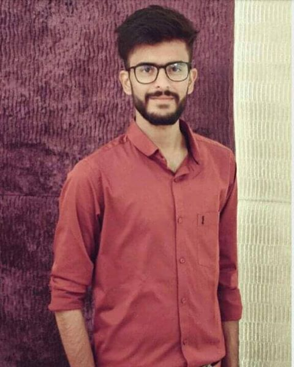
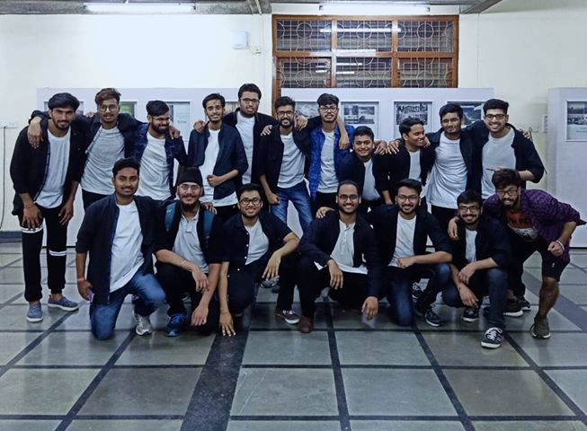
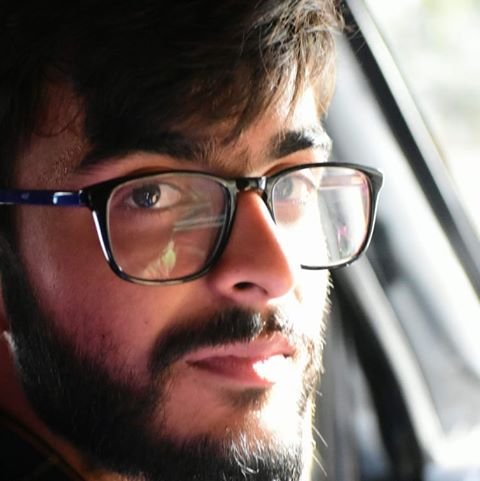
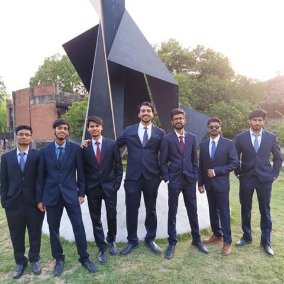

October 22, 2019
Hello everyone,
Hope you guys had a lit Antaragni.
I am Deepak Lunawat and I have graduated this
year as a B. Tech from the Department of Civil Engineering,
IIT Kanpur. Post-Antaragni is one of the most unexciting times
of the year and worst for those who sit for placements. I
believe you're having a very tight schedule of PPTs and tests.
As I've recently gone through the placement process, I can
feel the present aura of the campus. I know you all are
working hard but I'm sure there are many who are facing
problems due to poor academic performance. As I have been on
the same situation, I feel I should share my experience and
some fundas which might help you to overcome this hindrance
and get the best out of it.
When I submitted my final CV with a CPI of 5.6, the only
option I had was to make other sections strong to balance this
gap. First I did an online Coursera project based on Data
Science and Machine Learning. Completion of that project
boosted my confidence and I started working on my aptitude. To
build up communication skills I started reading newspapers and
articles. We used to prepare for guesstimates and case studies
in groups. There have been times when all of this seemed
useless because of my poor academics, but my self-confidence
and support from my family and friends kept me from giving up.

Having gone through the placement process, I would say every
achievement has its importance and value, be it in academics
or extracurriculars. For instance, consulting companies look
for PORs, good internships, and decent CPI. Coding companies
mostly test only coding skills. Core companies look for
domain-specific knowledge and related projects. Non-core
companies have demands according to their work profile.
However, CPI is the most crucial segment of your CV,
irrespective of the field you choose. A good CPI is indicative
of your dedication and consistency. As is commonly said, a
good CPI might not guarantee you a job, but it certainly makes
your path to the interview room relatively easier.’ Why do you
have a low CGPA?’ is a very common question if your academics
have not been very well. My advice is to play it very safely.
Neither get nervous nor give unnecessary excuses as it creates
a dull impression. Tell them clearly that your CPI is low
because you did not study properly in the first place and not
a day goes by in the last semester when you have not regretted
that. Gently admit that although you may have been on
leadership roles or in extracurriculars, but in college
studying is the one thing that is supposed to be done, so
there is no alternative explanation to this. But also ensure
them that you are highly passionate about undoing it, working
very hard and never felt this energetic before because of that
one failure. By this, you show them that you have an attitude
of accepting failures and working hard on them, the
much-needed skill in the corporate world. For me ‘Low CPI’ is
one failure that will always keep me on my toes and drive a
sense of sincerity and discipline in me.

Your CV is the reflection of what you have done in your life
till now, hence it is important to put it in the right way.
For the ones whose academics are not strong, don’t get
depressed. CPI just takes a seed size space on your full page
resume. Each one of you must have devoted your 3 years in many
different activities, learned many productive skills. Write
everything in a systematic manner. Put more emphasis on
writing valued work rather than filling it with unnecessary
stuff for the sake of filling the space. Avoid exaggerated
statements, complex wordings, grammatical errors and informal
language. And most importantly, your CV should reflect the
real you, never ever lie on your CV.
Now comes the final interview after all is done. I got placed
on the 8th of December and those were the most traumatic 8
days of my life. I would not have been able to cope up with
that, had my wingmates not been there to support me.
Because of my low CPI and fear of coding, my scope of
companies was very limited. Out of the numerous companies I
had applied to, I got my first interview on Day 4.
Day-4, Company- L & T infotech, Profile- Business
Analyst
Following a GD, there was a 45 min technical round, completely
based on Machine Learning and Algorithms. As I had recently
completed a project on ML and grasped all the concepts, I
cracked that interview. I got selected, had an offer letter in
my hand and then HR realized that they can’t recruit
candidates whose CPI is below 6. Hence, rejected. I requested
them a lot, cried in front of them, but all came to nothing.

Day-5, Company- ZS Associates, profile - Business
Associate
It had 1 Case-study round-1 hr written case study, 1 technical
round-basic questions on analytics, ML and 1 HR round-mostly
resume based with some puzzles and guesstimates. After
clearing all three, ideally I must get selected but due to low
CPI, I got rejected, after getting selected, for the 2nd time.
As the major share of companies coming to campus placements
require good coding skills, I had a tough time to get inside
the interview room.
Day-8, Company ICICI Lombard, profile - Manager
After clearing the aptitude test, it had 2 technical rounds,
questions majorly based on my resume and my POR. That's why
you must have a complete understanding of every single word
you have written in your resume. After that, it had one HR
round, very generic questions were asked about the company,
your aspirations, your expectations, etc. After day-long
sessions of interviews, this time, I finally got recruited as
a Manager in ICICI Lombard where I am working right now. I
still remember each and every moment of that night. The
feeling of getting placed will make all your efforts, your
sacrifices, your rejections worth it.
One of the most difficult parts of the placements is handling
the stress without losing one’s cool. Undoubtedly, the 7th/9th
semester is the most stressful time for anyone who is sitting
for placements. From PPTs (in formals) to company tests(Even
during Antaragni), and with your regular semester load, your
schedule will be jam-packed.

Keep your course load as low as possible this semester. Prefer
not to take any heavy project, unless it is very important or
relevant to your preparations, as it will consume a lot of
time which otherwise could be used on developing skills. For
case-study and guesstimates, always prepare in a group. It
helps in creating the mock environment and will give a much
needed moral support in the low time. And most importantly, Be
focused. Don’t get distracted from what friends/seniors/alums
are saying regarding your low CPI. If you are genuinely
working hard and have patience, you will get placed. Period.
Just in case, if your skill sets do not resonate with any
company’s and you remain unplaced in phase I, don’t get
disheartened. Many students in my batch got placed in phase 2
with good company and high package, and very honestly, this is
not even your beginning. Life is full of opportunities, much
more than we could ever imagine. Learn from your failures and
come stronger.
To those who are not sitting for placements, be there for your
friends. Go with them during interviews. They will need your
support and encouragement.
You can reach me out for any kind of help, anytime. All the
best!